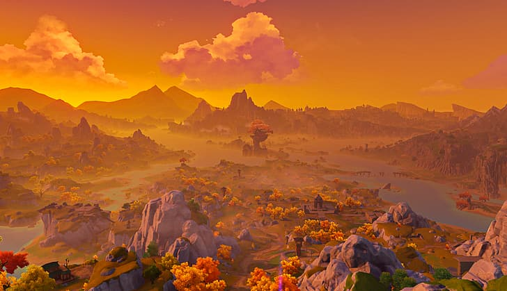
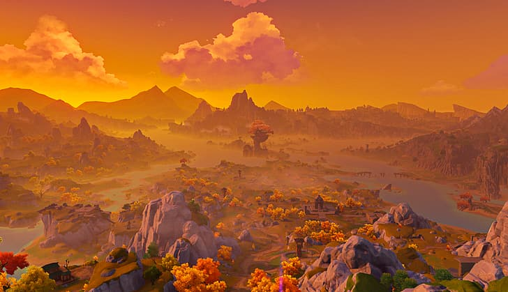

Genshin Impact Visuals
Genshin Impact is a game developed by Mihoyo. It is an open-world action-based role playing game set in a fictional world called Teyvat.
Nations in Genshin Impact are heavily influenced by real world countries. Liyue is inspired by China where many locations are mirrored off of real-world Chinese scenery and attractions.
Sceneries
Liyue Harbor
The establishment of the harbor kicked off Liyue's seafaring trade. As Teyvat's largest market harbor, the sheer amount of goods that flow to and from it is simply incomparable for other ports.
Mt. Tianheng
The pride of the mountain range that shelters Liyue Harbor from the west, acting as a natural shield against any enemies that may come that way. Liyue's earliest mining operations are also believed to have started in this area.
Wangshu Inn
A landmark within Dihua Marsh, built upon a massive stone pillar. As most of the patrons that stop here are traveling merchants, the inn provides an area for them to trade and set up stalls.


 
